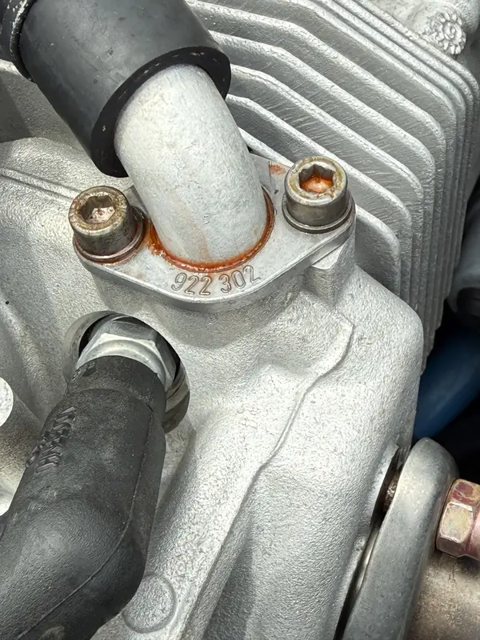

Cooling / Oil / Temperature
ROTAX Cooling, Coolant Leak, CHT & Oil Temperature Support
This page is for high oil temperature, high CHT, coolant temperature, oil pressure, coolant loss, radiator airflow, or oil cooler concerns.
What You May Notice
Temperature Trends Are Useful When They Are Specific.
- High oil temperature or changing oil temperature trend
- High CHT or coolant temperature
- Oil pressure change tied to temperature
- Coolant loss, odor, or trapped-air suspicion
- Changes after cowling, hose, cooler, or maintenance work
What It Can Involve
Cooling Complaints Are Often Installation-sensitive.
- Radiator and oil cooler airflow
- Coolant condition, trapped air, and hose routing
- Oil pressure, sensor data, and operating conditions
- Cowling, baffles, ducts, and installation details
- Maintenance history and applicable ROTAX information
Source-tracing Evidence
Residue Location Can Point Away from the Actual Source.
This condition appeared near the cylinder-head area, but the investigation followed the fluid path back through the hose and fitting context. The photograph preserves what was observed without turning one stain into a premature diagnosis.

Cooling System Review Focus
Temperatures Should Be Read as a Pattern.
Oil temperature, coolant temperature, CHT, and oil pressure tell a stronger story when they are compared by phase of flight and trend over time. A value that appears after taxi, climb, cruise, or a maintenance change may point to different areas of the aircraft installation.
System Context
Airflow and Routing Are Part of the Engine Story.
Radiator condition, oil cooler airflow, ducting, cowling fit, hose routing, coolant history, sensor confidence, and records all matter. The review avoids turning a temperature value into a conclusion until the aircraft-specific cooling and oil system context is understood.
What Information Helps First
Numbers and Conditions Matter.
Start With the Facts
Send the Cooling or Oil-temperature Concern.
Start with the aircraft, operating condition, oil temperature or pressure values, coolant or CHT behavior, outside air temperature, and recent maintenance context.
Send Aircraft Details